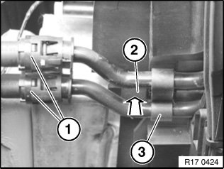
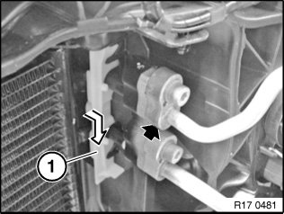
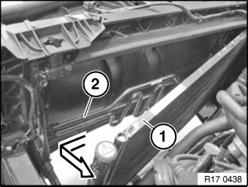

17 11 370 Removing and Installing/Replacing Cooling Coil For Power Steering
17 11 370 Removing and installing/renewing cooling loop for power steeringWarning!
Danger of scalding!
Only perform this work after engine has cooled down.
Important!
When working on the oil, coolant or fuel circuit, you must protect the alternator against contamination.
Cover alternator with suitable materials.
Failure to comply with this procedure may result in an alternator malfunction.
Necessary preliminary tasks:
^ After completing this operation, check fluid level in tank of power steering system.
^ Remove radiator

Press lines (1) in direction of cooling loop, pull black locking ring towards rear. Keep locking ring pressed and detach lines (1) from cooling loop.
Important!
Catch and dispose of emerging oil.
Press lock (2). Pull cooling loop (3) of power steering towards rear out of holder.

Unlock seal (1) in direction of arrow and remove.
Release screw.
Remove A/C condenser towards rear top from fixtures.

Carefully tilt condenser (1) in direction of engine, taking care not to damage the condenser or lines in the process.
Note:
Lines of A/C system remain connected to condenser.
Pull cooling loop (2) of power steering out of module carrier and remove.